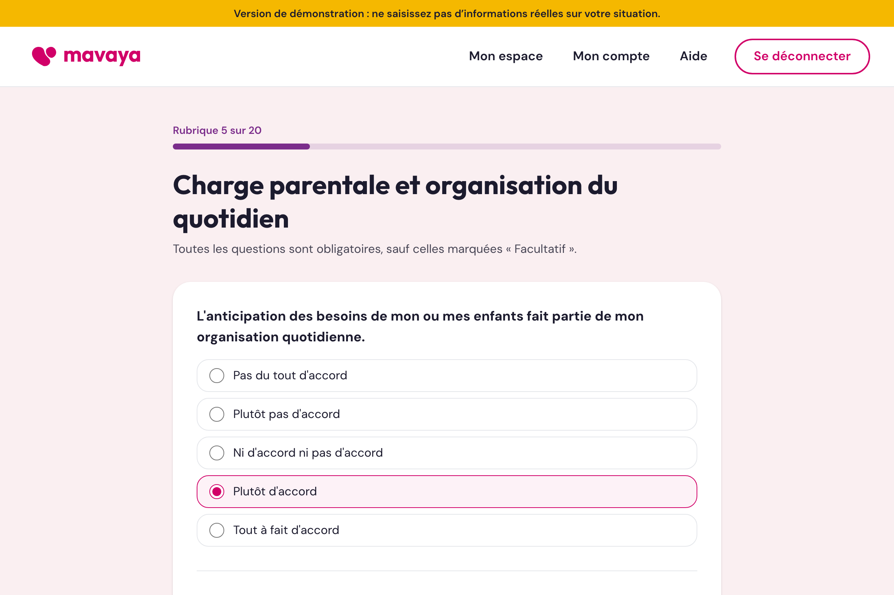

Étape 1
Un questionnaire qu'on reprend quand on veut
Une vingtaine de rubriques sur la vie de famille : l'organisation du quotidien, la garde des enfants, le travail, le budget, le soutien autour de soi.
Chaque réponse est enregistrée au clic. On peut s'arrêter, fermer la page et revenir plus tard exactement là où on en était.